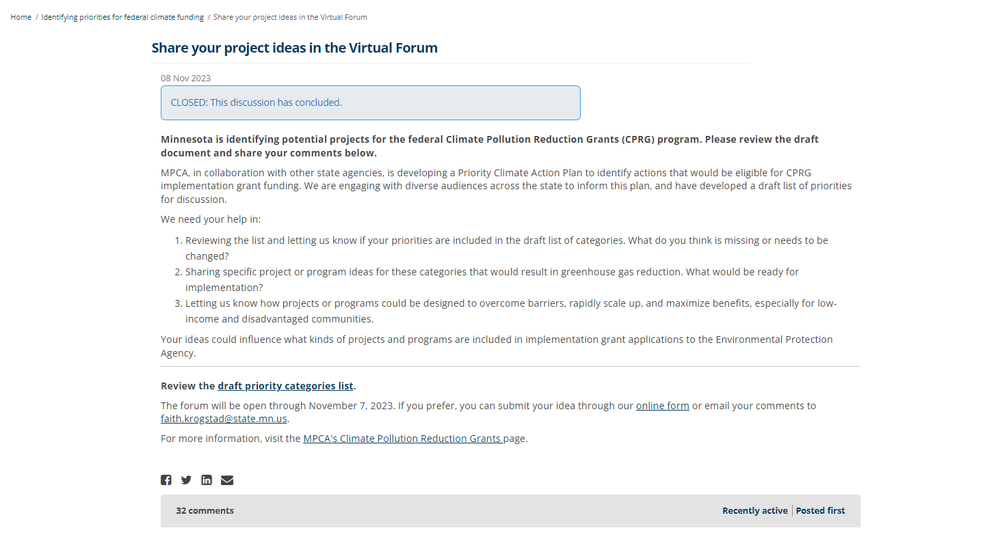

flowchart TD
A(Start: Secure Planning Grant) --> B(Develop Priority Climate Action Plan (PCPA))
B --> C(Submit PCPA)
C -->|Eligibility Confirmed| D(Develop Comprehensive Climate Action Plan (CCAP))
C -->|Not Eligible| E(End Process)
D --> F(Complete CCAP)
F -->|Ready to Apply| G(Submit Application for Implementation Grant)
F -->|Not Applying| E
G --> H(Receive Funding for Projects)
H --> I(Implement Projects)
I --> J(Project Completion and Reporting)
Our second case focuses on the Minnesota Pollution Control Agency’s (MPCA) efforts to design and fund a climate pollution reduction project. As part of the Inflation Reduction Act, the U.S. EPA’s Climate Pollution Reduction Grants (CPRG) program is a $5 billion investment that provides states, local governments, and Tribal Nations with resources to implement projects that reduce greenhouse gas emissions and other harmful air pollution [@zotero-10578]. In collaboration with other state agencies and stakeholders, the MPCA secured a planning grant in June 2023. The deliverables for this grant included a “Priority Climate Action Plan” that provides “a focused list of near-term, high-priority, implementation-ready measures to reduce climate pollution from greenhouse gas emissions” [@kohlaschb, p. 8].
The PCPA includes a list of projects the agency would be ready to implement. Submitting the plan made the MPCA eligible to apply for an implementation grant, which would provide funding for one or more projects identified in a Priority Climate Action Plan.
This effort to “identify priorities for federal climate funding” is in some sense happening on a project-specific EngagementHQ webpage.
Engagement HQ
EngagementHQ is a digital platform designed primarily for use by government agencies. The “all-in-one digital engagement platform” consists of a suite of features designed to help agencies design and manage community engagement activities. Product descriptions and case studies of EngagementHQ emphasize its ability to promote two-way dialogue, using phrases like deliberative dialogue, open discussion, civil debate, conversation, co-design [@2021].
EngagementHQ serves as something akin to a content management system where government communicators can design and facilitate communication.
Agency communicators can provide valuable project context on the landing page for the project. In this case, the landing page serves as a hub for the Minnesota Pollution Control Agency’s efforts to secure a Climate Pollution Reduction Grant from the Environmental Protection Agency.
The top of the landing page features text describing the details of the grant program, what the agency has already done, and what will happen next in the project. At the end of this text readers are invited to sign up for email updates about the project or email a coordinator directly if they have questions. Links to share the page via email or popular social media platforms are also featured.
To the right, a graphic representation of the project lifecycle lists phases of the project and the estimated timeframe for each phase. Checkmark icons indicate which phases have been completed.

Together, the project overview text and lifecycle panel provide high-level project context to orient participants.
A files repository allows government communicators to provide in depth information and additional background. A files panel below the project lifecyle features a list of materials including video recordings and associated slides from a series of webinars in which project facilitators provided project information and answered participant questions.

These webinars serve as a digital alternative or supplement to public meetings where project facilitators might brief community members on the project and seek input. In this case, these webinars serve as key moment to frame subsequent engagement around a set of shared, salient facts.

In addition to providing data, the agency directs participants to data sources they believe will be compelling to the funding agency. For example, they note that the EPA reviewers expect projects to have a positive impact on disadvantaged communities, as defined by Justice40 Initiative criteria and the Inflation Reduction Act’s Disadvataged Communities Map [@zotero-10588; @usepa2023].
Participants are directed to access maps of disadvantaged communities in Minnesota via EJScreen, the EPA’s Environmental Justice Screening and Mapping Tool [@zotero-10590].
Additional files are added throughout the project, such as an outline of potential ideas early in the project and a draft of Priority Climate Action Plan.
Survey
The team uses the survey feature to collect data on values and preferences to ostensibly inform which projects they move forward with and provide empirical support for those choices. The Climate Pollution Reduction Grant team opened a survey to gather project ideas within the priority categories they identified. As the team articulates in the final Priority Climate Action Plan, this survey “garnered over 350 submissions from local governments, community-based organizations, state agencies, academic institutions, businesses, and interested individuals, spanning from general ideas to detailed project proposals…these helped inform the measures that are now integrated into the PCAP” (p.17, @kohlaschb).
Ideas board
Some of the features in EngagementHQ explicitly promote dialogue between government communicators and participants, but also enable dialogue across participants.

The team used an “ideas board” to invite participants to share their ideas for reducing greenhouse gas emissions. Unlike a survey response that goes directly to the CPRG team, short “ideas” are posted to the board become cards in a grid for other participants to read, like, share, or respond to.
Forum board
The team also used a “forum board” to invite participants to share ideas. While the prompt is similar to the ideas board, this format is presumably better suited for more involved posts.

Here again, participants are able to respond to others’ posts.
Overall, we see the MPCA use the features of EngagementHQ to not only to provide participants with information in a variety of formats but also to facilitate exchange among participants.